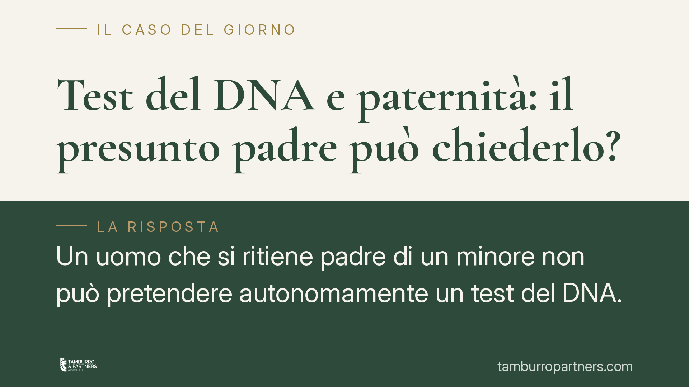

Test del DNA e paternità: il presunto padre può chiederlo?
Un uomo che si ritiene padre di un minore non può pretendere autonomamente un test del DNA. La legge non riconosce un accesso diretto all'accertamento genetico: servono il consenso della madre o un'azione giudiziale. Comprendere questa distinzione evita passi falsi e tutela il rapporto con il figlio fin dall'inizio.

Il caso in sintesi
Capita che un uomo sia convinto di essere il padre di un bambino, ma la madre non lo riconosca come tale o si opponga al riconoscimento. La domanda ricorrente è semplice: posso imporre un test del DNA per chiarire la situazione?
La risposta è netta. Fuori dal contesto giudiziale, il presunto padre non ha alcun potere di ottenere coattivamente l'esame genetico. Nessun laboratorio può procedere sul DNA di un minore senza il consenso di chi ne ha la rappresentanza legale, di regola la madre. L'unica via percorribile passa da un accordo volontario oppure da un procedimento davanti al giudice.
Inquadramento normativo
Il riconoscimento del figlio nato fuori dal matrimonio è disciplinato dall'art. 250 del codice civile. Quando il minore ha meno di quattordici anni, il riconoscimento da parte di un genitore richiede il consenso dell'altro genitore che abbia già riconosciuto il figlio. Se la madre nega il consenso, il padre non resta senza tutela: può rivolgersi al giudice, che valuta l'interesse del minore e, ove il riconoscimento sia conforme a tale interesse, tiene luogo del consenso mancante.
Quando invece il rapporto di filiazione non è ancora accertato, entra in gioco l'art. 269 del codice civile, che disciplina la dichiarazione giudiziale di paternità. È in questa sede – un giudizio vero e proprio – che il test del DNA trova la sua collocazione naturale, come mezzo di prova disposto dal giudice. La consulenza tecnica genetica viene ordinata dal tribunale e, se una parte rifiuta di sottoporvisi senza giustificato motivo, quel rifiuto può essere valutato come argomento di prova a suo sfavore.
In altre parole: il DNA non è uno strumento privato che si attiva a piacimento, ma un elemento probatorio che vive dentro un procedimento legale.
Cosa cambia per chi si trova in questa situazione
Per il presunto padre significa che non esiste una scorciatoia. Non è possibile ordinare un kit, prelevare un campione del bambino e ottenere un accertamento con valore legale contro la volontà della madre. Un test svolto in autonomia, magari su un campione biologico ottenuto senza consenso, non solo è privo di valore probatorio ma può esporre a responsabilità.
La strada corretta è duplice. La prima è l'accordo: la madre acconsente al riconoscimento e, se lo si desidera, a un test volontario. La seconda, in caso di opposizione, è l'azione giudiziale, dove sarà il giudice a disporre l'esame genetico con tutte le garanzie del contraddittorio.
È bene ricordare che la finalità di queste norme non è premiare o punire un genitore, ma tutelare il diritto del figlio a conoscere la propria origine e a vedere accertato lo status di filiazione. Ogni valutazione, anche quella sull'ammissibilità del riconoscimento del minore infraquattordicenne, ruota attorno all'interesse del bambino.
Cosa fare in concreto
- Verifica lo stato del riconoscimento: accerta se il figlio è già stato riconosciuto dalla madre e se il tuo riconoscimento richiede il suo consenso ai sensi dell'art. 250 c.c.
- Tenta prima la via consensuale: proponi in modo documentato il riconoscimento e, se possibile, un test volontario condiviso; un accordo evita tempi e costi del contenzioso.
- Non procedere con test "fai da te": un esame svolto senza consenso valido è inutilizzabile in giudizio e può generare responsabilità.
- Raccogli elementi utili: conserva messaggi, testimonianze, documenti che possano supportare l'azione giudiziale di dichiarazione di paternità ex art. 269 c.c.
- Agisci senza attendere oltre: consigliamo di valutare tempestivamente l'azione giudiziale, anche perché la costruzione della relazione con il figlio beneficia della chiarezza dello status.
In conclusione
Il presunto padre ha strumenti concreti per far accertare la paternità, ma nessuno di questi consente di imporre unilateralmente il test del DNA. La legge affida l'accertamento al consenso o al giudice, sempre nell'ottica dell'interesse del minore. Muoversi nel modo corretto fin dall'inizio è la scelta più efficace.
---
*Contributo informativo a cura di Tamburro & Partners - Avv. Giuseppe Tamburro. Non costituisce parere legale.*
Ogni famiglia ha il suo equilibrio.
Separazione, divorzio, affidamento, assegno: se vuoi un confronto riservato su una specifica situazione, scrivi allo studio. Ti rispondiamo entro un giorno lavorativo.